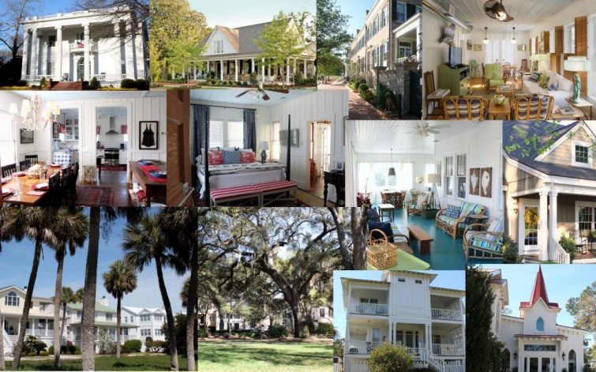
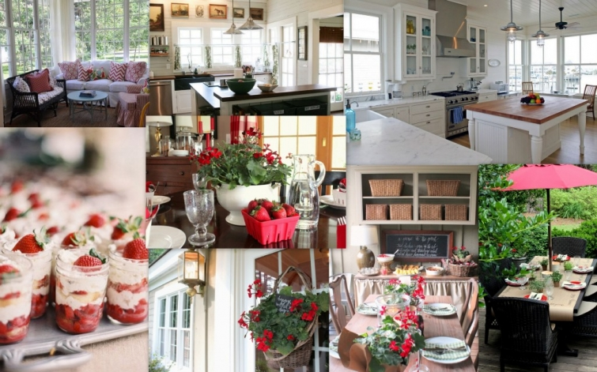

.png)
.PNG)
.PNG)
.PNG)
.PNG)
.PNG)
.JPG)
.JPG)
.PNG)
.PNG)


Time to celebrate!! On April 9, Talk of the House turned 3 years old – a mere toddler in blogland. 🙂 (I’m only a week late for the birthday celebration! 🙁 ) I decided to wait to do this recap post until we were finished touring the town of Celebration. So now that we are “back home” here on the blog, perhaps you will allow me to do a little rerun of what has gone on here the past 12 months. Let’s take a look back…
Last April we did a lot of traveling beginning with Meat ‘n Greet and the town of Newnan. Then we toured two Southern Living Idea Houses in Senoia, Georgia. Our Spring Break that month on Tybee Island brought posts on Mary Kay Andrews’ Breeze Inn, 3 posts on her fabulous beach house, Ebbtide, a visit to Savannah, Paula Deen’s restaurant and homes, and a look at the Tybee Island sites that were featured in the movie, The Last Song. Finally, back home we decorated the house for Easter.
May began with the final Tybee Island post – this one on Jane Coslick and all her darling beach cottages. That was followed by a study of equestrian style for the Kentucky Derby. I couldn’t stay away from beach houses too long because we then looked at a beautiful one on the North Carolina coast. Then I went crazy with 4 posts on strawberries, and red and green for Mother’s Day, and a picnic on the porch. We finished the month with an herb dinner on the deck.

Then we stayed outside a lot in June with 3 “in the garden” posts: sheds, outdoor entertaining, and window boxes, and then, because their gardens were sooo gorgeous, we toured A Little Inn on Pleasant Bay – waaaay up in Massachusetts. That was followed by our 3-part Summer Home Tour (my favorite posts of the year. 🙂 ) I also shared the first of the Talk of the Weekend posts with you in June.
In July we studied the work of Gary McBournie and the work of Carpenter and MacNeille. We enjoyed an ice-cream bar and barbeque for Independence Day, and we toured The Cottages at River Dunes. At the end of the month, I wrote a looooong post about blogging that mistakenly made some of you think I was quitting (so sorry – didn’t intend to do that to you!) but I loved all 97 heartfelt comments on that post!
The month of August began with places at the beach – Castle Hill Inn and 4 posts on St. Simons Island here in Georgia, but then it was back to school with my classroom, homework stations, a bunch of back to school parties, and even a fun one (with a pizza recipe!) here.
September began with a post on all the crazy things that were going on with our family followed by 2 “decorating the house” posts. We enjoyed the work of Summerour and Associates and Barbara Westbrook. We looked at changes in the Henderson Village resort, decorated the porch, and had a Mitford meal to celebrate Jan Karon’s new book. 🙂
I had a fun time working on our gallery wall project with some other talented designers in October, and then the closet in our sons’ room was finally organized. We enjoyed seeing the spaces designed by Pritchett-Dixon and Dungan-Nequette, and we toured the amazing New York inn – The Point (perfect for fall. 🙂 ) Then we did our own fall decorating for outside, for inside, for a Halloween dinner, and for a yummy dessert bar out on the porch.
Kathleen Rivers’ rustic rooms were perfect for November. So were Thanksgiving table settings and a beautiful barn wedding we attended. We started work on my workroom, and we did a lot of decorating for Thanksgiving (3 posts!) The end of the month found us shopping at the Pottery Barn Outlet in North Georgia.
Then the December rush began. We made a little progress on my workroom, toured the house with old Christmas decorations, had fun with some other bloggers for a Christmas in the kitchen party, made divinity, took a tour of historic homes in Macon, Georgia, decorated for the holidays, and celebrated Christmas.
More workroom progress was made in January. We had a little photoshoot and film session with the Better Homes and Gardens folks. 🙂 We compared some photos of the changes in the former Vera Bradley Inn in Seaside, Florida, and we perused the work of the talented Cathy Kincaid. (And there were quite a few Talk of the Weekend posts that month too.)
February began by asking you if you decorated with pink. Valentine’s Day brought a Martha’s Vineyard home decorated with red and our house with an abundance of the color as well (and a few diy projects. 🙂 ) My husband’s office was almost finished, and we celebrated his birthday with a big weekend-long sports party. The architecture of John B. Murray finished out the month.
Dr. Seuss decor kicked off the month of March. We then viewed some wonderful kitchen eye-candy. Our trip to Disney World inspired 4 posts on some of the resorts and parks. Back home we decorated for Saint Patrick’s Day, and my workroom was finished. (Hallelujah!! 🙂 ) We looked at 30 ideas for organizing workrooms, and the month came to a close with the colorful Hotel Iroquois.
And now we have reached this month of April where we have decorated the house with red and yellow, had lovely Easter meals, and visited the town, the houses, and a hotel in Celebration, Florida.
Phew! That was a lot! It has been such a busy year here at Talk of the House…125 posts in the last 12 months…and this post brings my grand total for all three years up to 400. Not bad for just an ordinary school teacher. 🙂 And while we are playing with the numbers, here are the top 5 most read posts that were published in the past 12 months:
3. Paula Deen: Her Beach Cottage, Restaurant, and River House
4. In the Garden: 25 Charming Garden Sheds
And I have to thank my top referring sites for sending all you wonderful readers my way. 🙂
1. Pinterest (Thank you to everyone who pins from Talk of the House!)
2. Savvy Southern Style (Thank you Kim!)
3. Classic Casual Home (Thank you Mary Ann!)
4. Hooked on Houses (Thank you Julia!)
5. Southern Hospitality Blog (Thank you Rhoda!)
And now it is time for a gift…because you can’t have a birthday without presents, right? 🙂 I want to give away 2 books and a gift card to one of you lucky readers.
I just finished reading an advanced copy of Kristy Woodson Harvey’s delightful very first novel, Dear Carolina. (You may know her name from the lovely blog, Design Chic where she writes with her mother.) It was a touching work of Southern literature about 2 mothers and how their lives become entwined to form a family. (It was so good in fact, that I found it hard to believe this is Kristy’s first novel!) I love a book that leaves you feeling good at the end, and Dear Carolina does just that. So I know you will enjoy it. (It will be released on May 5.)
I am also including a $25 gift card for Amazon.com and a copy of my very favorite (and most used) cookbook, Treasures from Home. This is one of those cookbooks that has recipes that have been handed down from family member to family member- recipes you will use over and over again (with ingredients that you more than likely have on hand.) It is a treasure!
Kristy is providing a copy of her novel, but the other two items are simply from me (non-sponsored) to thank you for reading here and making it so rewarding to write this blog. I truly am humbled by all of your kindness. To enter, just leave a comment on any/or all posts that publish between 4/16/2015 and midnight Eastern time 4/23/2015 (on the blog – not an email reply please)- one comment per post please. I’ll announce the winner, chosen from a random drawing, in the first post that publishes after that. Good luck!
Until next time…


.PNG)
Happy Birthday. Your blog is wonderful – down to earth and realistic. I just love your style. Thanks for sharing with all of us.
This post was a lovely recap of the last year! You had so many wonderful experiences! Congratulations on 3 years and here’s to many more!
Congrats on 3 years!!! I don’t have any idea of how you do all you do!!! You amaze me! But, I wish I could just follow you around for a week and watch (and learn)!!!!
Kelly,
How do I love your blog, let me count the ways…well, really too many to count. I can truthfully say, you have the “Best All Around” blog to which I subscribe. When I check my email, I always scroll to see if there is one from Talk of the House, and then, I MUST open it first. Then I usually read it at least twice. Thank you for all those posts. I have enjoyed each and every one of them. Happy Birthday! I am thrilled to have found you. Your posts make my day more times than I can count. Keep the creativity rolling, amazing lady. Thank you.
Sherry
Love your blog and seeing all of your great ideas Kelly. You are one busy lady. Happy blog birthday!
Love your blog and all the reds. Happy Blog Birthday
Congratulations on your anniversary. What a joy to see a post from you. always a celebration for the eyes and heart!
Happy Birthday Talk of the House! Love your blog! Always enjoy your ideas and creations. Thank you for sharing.
I love your blog! Thank you for sharing your wonderful ideas with us!!
I found your blog a couple years ago and I’ve loved it ever since. You have a style that matches mine perfectly! Happy Birthday Talk of the House!!! Many Many More!!!
Looking forward to reading Dear Carolina. I love books that make me feel good. I also want to thank you for all the Tybee Island cottages you have shared with your readers. They are so charming.
I love your blog. Thanks so much for all the work you do to share beautiful ideas with us!
Happy Birthday! I really enjoy your blog.
New to the your blog. LOVE IT! It is a stress reducer for me….
Happy Birthday…you are one of my favorite bloggers!!
Blessings to you,
J
I love reading your blog! This birthday post was great. Looking forward to many more posts.
I love your blog! Happy Birthday!!
Here is another “happy birthday ” to you and your blog. I am really looking forward to seeing what you do on the blog after you have retired from your day job. Love, love, love your home and your style!!
Kelly, all of your posts are beautiful….but it is really something to see so many of the beautiful pictures in one post…stunning. Happy Birthday!
Happy Birthday! Recently found your blog and love stopping by!
Happy Birthday! I am a new reader – I just discovered your blog. Filled with great ideas. I’m going to enjoy being a follower. Thanks for the give away.
Happy blog birthday! I think I found your blog by way of Arlene at Nanaland, and I have subscribed by email for quite some time. Love your blog and the inspiring ideas. What a wonderful, generous giveaway! Thanks for the opportunity to win, and for putting all of the hard work that you do, into your blog. It’s truly a place of inspiration.
Kelly,
Happy blog birthday! Thanks for sweet recap! I love getting to take e-trips with you. I wish you all the best on your blog birthday and always! Take care.
Would love to win’
Happy Birthday!!! What a great giveaway, the books sound great! Thanks.
Kelly, soooooo excited and thankful for your blog hitting the 3 year mark! I always tell you that your blog is my favorite, and I MEAN IT!! It is cozy and friendly. Just like a friend with a hug! I love to pour a hot cup of coffee and sit down to your blog. You continue to inspire me. I always love when you put which posts your readers read the most! Hugs to you Blog friend! (ps. don’t enter me in the contest as I was the winner last time!) And I STILL love the cookbooks!
It’s always the start of a good day when I see one of your posts, and to think you have been doing this for three years! Congratulations and Thank You for sharing your creativity, your adventures, and your lovely home. You Are an inspiration!
Congratulations on three years! Thank you for your lovely and personal blog.
Happy Blog Birthday! I always enjoy my visits here…:) I get lots of inspiration! Your tables, calligraphy, and decorating style are all perfection! Have a blessed weekend. Thanks for hosting such a sweet giveaway!
Blessings, Vicky
I love your post, so much inspiration. Thank you for the giveaway.
HI Kelly,
I’m a bit behind on my reading, so Happy Belated Birthday and Congratulations! Your blog has been among my “must reads” for all three years! I’m always inspired by your table settings and menus and a little bit (okay a lot) jealous of your fabric collection and your new office space. Thanks so much for all the great content! Paula
I can’t remember how I came to find your blog, but I am hooked. I love your spirit, your style, and your simplicity as you focus on details. I continue to come back, again and again. You are an encouragement to me to boldly make changes (even small ones) to have my home become a place that I enjoy and that welcomes others.
Happy 3rd Anniversary, Kelly. Seeing a new blog from me always makes my day. I hope you NEVER stop writing and sharing photos with all your fans.
Happy Third Birthday, Kelly. I absolutely love your style, and your home is my idea of perfection. Thank you so much for sharing your gifts with us. Looking forward to many more years of Talk of the House.
Happy Birthday to Talk of the House!! I remember back when you were talking about starting it! I’m so proud of you and love looking at all of your design ideas. Keep up the great work!
I love your blog. I check every evening hoping to find a new entry. It’s a great perk at the end of the day. Your style is exactly what I love.
Luv your blog. I find so many things that interest me here, and the photography is beautiful. Happy Borthday!
Vicki
Mtnhomeblog.com
Thank you Kelly, for the gift of your wonderful blog. It is always at the top of my list!
I love all your decorating ideas and esp. your photography.
Thanks so much for this giveaway!
Happy Blog Birthday to you!
I always enjoy reading Talk of the House. You share so many
wonderful thoughts and experiences with your readers. Also some truly exceptional pictures. I have a blog and even though I don’t post as often as you do, I certainly appreciate the time and effort you put into yours! Happy Birthday and cheers to another wonderful year!
Happy Blog Birthday! What a wonderful recap of the year. It’s hard to believe, but I must of missed a post or two. This makes it really easy for me to find them, thank you!! I really do enjoy your blog, I know it takes much time where you could be doing something else. Thank you for the time, effort and love you show in each post!
Congratulations on your birthday – and thank you for such a generous giveaway! xo
What a delightful start to my weekend!! My morning cup of coffee with Kelly! I love seeing your blog updates in my email – they are such a treat, I almost squeal with glee! But this post was just beyond expectation! Love your blog and your warmth makes it like a visit with a friend!! Thank you sharing your home and inspiration with us. Happy Blog Birthday!
Happy Birthday! I love your blog, your home and your style. I found you on Pinterest and I’m so happy I did. I’m constantly amazed at all you do while working a full time job! Keep blogging – love the inspiration!
Congratulations and Happy Blog Birthday. Your blog is one of my favorite. I’m always excited to see a new post. You do a great job coming up with a variety of interesting and timely topics. I can’t imagine all you will accomplish when you finish your full time teaching career. Congratulations on that also, Donna
I remember where I “met” you…The Lettered Cottage and how I wished that you had a blog (you didn’t yet). Then you did!!! Yay, me! You keep writing, and I’ll keep reading! Hugs 🙂
Hi Kelly,
Happy Birthday to Talk of the House! Your blog is one of the only blogs that I check in on regularly. You have been so kind with your responses to emails and comments (I did get that sofa reupholstered after our conversation). I wish you all the best – keep it up with the pertinent and interesting posts – we love them!
Megan
Hi Kelly, Your trip down memory lane has me wanting to go back and reread ALL of your posts! Congratulations on 3 years of blogging excellence! I’m sure I’m not your only reader who looks forward to your posts and enjoys them immensely! Such a wonderful giveaway! Cookbooks and feel good novels plus a gift certificate!!! what more could anyone ask for!! Imagine you must be getting excited for your upcoming retirement!
Happy blog birthday! My sister told me about your blog about a year ago, and I have been a loyal follower since that time. Thank you for the time and effort you put into Talk of the House. May God continue to greatly bless you, your family, and your future endeavors.
Happy Birthday, Talk of the House! Kelly you are a great addition to blog land and I look forward to each of your posts.
Cindy
Happy Birthday to Talk of the House!! I am a relatively new reader, so I enjoyed going through all of the posts on our “recap”….that was fun!! I’ve so enjoyed your posts, especially your decorating posts (love your house!) and the table setting ideas. Looking forward to another great year….
Blessings to you!
Lanita
Happy 3rd birthday and happy 1st anniversary of my introduction to your wonderful blog, Kelly! I was swept away by your posts last spring about the Georgia coast and have been hooked ever since on both blog and beaches. I am also planning my retirement, and the coast is at the top of my relocation list after a visit to Savannah and another trip soon to the SC beaches. All the info you have shared has been so personal and helpful. Like from a cherished friend! All the best to you, Kelly as you retire from teaching and venture on to new and wonderful experiences.
Happy Blog Birthday! It’s been a delight to follow along.
Love your blog- can not wait until you retire and do it full time!
I would love to get my hands on that cookbook!
Thanks- Peggy
Happy birthday to your blog and congratulations! I’m so thankful that I found your blog last summer! I’ve enjoyed reading your posts, looking at all the wonderful photos and have tried a few of your party suggestions – the July 4th decor was a hit at our party! Your blog actually inspired me to start my own and I appreciate all of your helpful suggestions! I can’t tell you how much I appreciated your doing that for me! It was very kind and generous!!! I hope you have a wonderfully blessed day!
Congratulations Kelly! So glad I found your sweet little blog. I always enjoy your posts, especially the ones that give us a peek at what is happening around your beautiful home. I can’t wait to see what posts will come, once you are officially retired, (no pressure 🙂 Toot, Toot again on that BHG issue yet to hit the press. Good for you! Happy Birthday Talk of the House.
Happy blog-birthday! Your site is one of my favorite places to spend time….your photography, your inimitable sense of style and the graciousness of your writing make each & every visit utterly enchanting. You are far from “just an ordinary school teacher”! Not many people possess your wonderful gift of creativity & superhuman energy! May your final days of teaching become the fabric of lovely memories, Kelly.
I love your blog and I’m always excited when I see a new post! Congratulations on 3 great years!
Congratulations and Happy Blog Birthday. I really enjoy following you and wish you the best in retirement too!
Happy Birthday to your lovely blog!
happy blog anniversary and best of wishes for your continued success. Love your blog and the wonderful photography!
Wow, I’m tired after all that traveling around! ☺️ My favorite posts are the ones from your beautiful house!!
HAPPY BIRTHDAY, TALK OF THE HOUSE!
Kelly – You have so inspired me to reach the ‘blogger’ status and am just enjoying writing and posting at the moment without a clue! I love how humble and easy you share ideas and beautiful things. Best of luck to you and HAPPY BIRTHDAY!!
Stacye Clark
Vignette a` la Mode (FaceBook)
Happy Birthday to Talk of the House and congratulations Kelly. I love and enjoy your blog so much and have looked at and re-read many posts more than once. You have helped me reconnect with my love for red and I have changed all my family picture frames to the ones you use in your home. You have a huge influence ya know. ; ) I think, as many others have said, you really should consider writing that book. I would definitely buy one!
Happy Birthday to the best blog out there! 🙂 Definitely my favorite. I still remember when I “discovered” your blog. Has been my favorite ever since. Thank you for all the wonderful posts. Looking forward to many more years of your creativity!
I wait for your blogs every week. I am a retired teacher so I know how much work you must have and am amazed by the number and quality of your posts. Looking forward to many more. Happy birthday!
Congratulations & Happy Birthday! I always enjoy your posts and can’t wait to see what project you tackle next. Have a great weekend!
Happy Birthday to your wonderful blog. You have created a great escape for your readers. Look forward to your retirement it is wonderful. I have been retired for 8 months and love it. I worked for 40 years and loved my job but I don’t miss it…just the people.
Thanks for sharing your life with us.
Jeanne
What a whirlwind of a year! I have loved every minute of it! 🙂
Happy 3rd Birthday!
We are so lucky to have you posting your wonderful ideas for us to enjoy!!! Thank you for all your hard work!!!!
Such a wonderful review of all the fabulous places you have been and you have made beautiful. I always enjoy stopping in. Best of luck for many more years of great blogging!
Happy Birthday to Talk of the House! You have been busy this past year…and it sure has gone quickly! If you did that much posting while you were teaching…do you think you’ll be posting more once you retire? 😉
I’m so glad that I came here from Hooked on Houses! Your blog is one of my favorites, both from the inspiration that I find here as well as feeling that I’m connecting with a wonderful person.
Congratulations to Talk of the House. Your blog is one of my favorites, it makes my day when I see it in my email. Good luck with your retirement, my husband is on his 2nd year from his guidance counselor career and loves every minute of it. Have a great weekend! Mickey
Happy Birthday, Talk of the House!
Kelly, you do a marvelous job and I want to add that I enjoy reviewing your archives.
Now how many days to “the” day (retirement)?
I hope you are celebrated at your school and that many of your former students will connect with you. Be blest!
Love the blogM
Kelly,
You’ve been very busy and we’ve enjoyed every post you publish.
I too am reading an advanced copy of Dear Carolina…it’s wonderful!
Can’t wait to see what adventures and creative ideas you publish in the coming year. I’m always impressed and inspired by your creativity.
xo,
Karen
Thank you for creating and sharing Talk of the House with all of us. It is a joy and inspiration to read. I am amazed at your talent for decorating, writing, photography and putting it all together on your blog. You are a very busy lady and I just appreciate you making the time to share this wonderful blog with all of us. I can’t wait to see what’s next! Happy Three Year Birthday!
Happy Birthday!! I love your blog. I especially love the posts of your home. Sometimes I think we could be twins. Your taste is so very much like mine. Thank you for sharing your home with us!
How exciting to be celebrating three years!! I think you’ve done well considering working outside of the home. 🙂 I think I have a little catching up to do. My old computer had a hard time loading all your beautiful photos so I didn’t visit as often. I am thankful for a new one now so I can visit regularly. 🙂 I love your blog.
Happy blog birthday!!
Happy Birthday, and thank you for a beautiful blog! I enjoy each and every post!
Congratulations and Happy Birthday! I love your blog.
I would love to win the cookbook. I have looked on Amazon and not been able to find it there. It would be a wonderful collection to my “collection”.
Loved this post and will go over the posts to make sure I have not missed anything.
Happy Birthday to one of my favorite blogs! I can’t help but smile every time I read your blog. It’s like a visit from a dear friend. Thanks for sharing beautiful places and lovely things.
I am so thankful that I found your blog. Thanks to you, I enjoy each passing season. Your posts and pictures always fill me with inspiration. Maybe this weekend I’ll make an Orange Marmalade Cake to celebrate. Congratulations Kelly, on another wonderful year!!
Happy Birthday! I just joined this past year & have enjoyed seeing all the homes & great places you’ve gone. Can’t wait for the Christmas catalog you’re home will appear in! Thanks for all you bring to my email inbox, Kelly.
Blessings to you & yours, Jill
HAPPY BIRTHDAY, Talk of the House, and congratulations, Kelly, on reaching this milestone!!! It is no exaggeration to say that ToTH is among the most well-organized and easiest-to-use blogs or websites on the web, and it never fails to lift my spirits and get my creative juices flowing. It is a virtual dopamine dispenser. I arrived at the ToTH party somewhat late in the game, thus still have some catching up to do among your previous posts. I eagerly await the happy hours I plan to relish in that task!
Reading your recap of the year gone by is enough to boggle the mind. I cannot fathom how you managed to juggle all the research, projects, travels, writing, “scrapbooking”, celebrations, and tribulations you’ve shared with us, let alone your job and all the day-to-day responsibilities of family and household management that AREN’T covered in the blog. I bow before your joyous energy, your imaginative approach, your constitutional fortitude, and your organizational abilities!
Like your other blog-followers, I look forward to the next year of uplifting and inspiring missives from you, and wish you all the best as you retire from teaching to focus your energies on home, family, and blog.
Three years! You and I have bouncing baby blogs only three months apart! I would have guessed you had been doing this so much longer because of your great writing, photography and good-looking site. You found your place in life, because we all love seeing the things you have to show us on each fabulous post.
Here’s a toast to many more years of you making me want to re-do my entire house!
Happy Blog Birthday, Kelly! I have read every single post you have done, most several times because I have to read them fast then go back and take it all in slowly. Once Katrina told me that she had found a blogger that was my sister, I went back and read every post I had missed. (I am not sure how long ago that was.) You have really inspired me to do lots of things in my house, in entertaining, and travel. Thank you! Thank you! Thank you! (From the comments above it sounds like everyone feels that same connection!)
Happy Birthday to Talk of the House! Kelly, your blog is a pleasure to read and it’s so informative too.
Keep up the good work!
Dawn R.
Congrats on you blog birthday! Your blog is a favorite of mine and I never miss reading a post.
Adore your blog! It’s refreshing to find someone else who loves red and can’t get enough of buffalo plaid and check patterns in this decorating world of trendy neutrals
Oh, wow, Kelly! Congratulations on 3 years of sharing your home and inspiration! Your blog is a delight to read and I look forward to seeing what you have in store for us in the coming year. My thanks, and best wishes to you~
Happy Birthday Kelly!! Your blog is a must read for me. I love your style and appreciate your humility and consideration for your readers. You inspire girl!
Happy Birthday, Talk of the House! As I look through past posts, I found myself wanting to pin, pin, pin! Kelly, from sharing your travels to showing us your own lovely home, you continue to inspire. Thank you, and congratulations!
Happy Birthday and Congratulations! What a fun year it’s been – if you take out the parts where you were sick :-(. Thank you for bringing us such visual treats and inspiration, and for taking the time to respond, as you so often did. I’m certainly in awe, wondering how you found the time to blog with a full time teaching job, not to mention using your own house as an inspiration board. I feel like I’ve found a kindred spirit who loves some of the same wonderful things that I do (though I do admit to being a blue and not a red person – but you include plenty for me, too). I particularly love the posts featuring new traditional homes by (mostly) southern architects as well as renovated older homes, and their interior design. Anything rustic with a mountain locale is also a favorite, though I love seeing the coastal homes, too (gotta dream about vacation spots). The Summerour Associates and Barbara Westbrook posts were some of my favorites. I look forward to more house envy – how we love to torture ourselves! And I’m always looking for another good book to read.
Love your blog. I found my way here after doing a search for Jan Karon. I then had to go back and read everyone of your posts. I love the look of your home and your little touches. Keep up the inspiration.
Kelly, Happy Birthday to you and your inspiring blog! There are many reasons to enjoy and look forward to reading your blog, but for me it’s the warm, inviting appeal of each post. You inspire me to create beauty and a feeling of home and family in my own home, and your style is one I love and can incorporate in mine.
You are so sweet and unpretentious and always original. I also like that your husband is so helpful and willing to participate in your projects. Thank you!
Oh Kelly, congratulations on three wonderful years of blogging! Your blog is one of my favorites! I love your style and so appreciate all of the work that goes in to publishing all of these great posts!
Kelly, Happy Birthday to your great blog. Your blog is eye candy and that is one of the reasons I enjoy it so much. You inspire me to change up things around the house and look at color in a new way!!
Happy Birthday to my favorite blog!
Love your blog, Happy Birthday!
Happy Birthday! 🙂
Congratulations on this wonderful milestone! I am continually inspired by your great taste and creativity. I’m always pleased whenever I see a new post listed on my newsfeed and always save it for last to savor. I know how much work goes into maintaining a blog of this caliber-creativity on demand is a challenge. Thank you! One question- when can one find a copy of Treasures From Home?
Happy Birthday to Talk of the House… the absolute BEST blog in Blogland for sooo many reasons! Really too many to count BUT to name a few……1. Your decorating skills 2. Your creativity 3. Your love of all holidays 4. Your research and the sharing of your research 5. Your recipes 6. Your frequent posts 6. Your love of travel and the “trips” you take us on 7. Your way of making us feel like your friend 8. Your true humbleness 9. Your efforts made to respond to all comments made on your posts 10. Your creativity ( this deserves 2 mentions)
Okay, there are just a few reasons Talk of The House really is the best blog out there
Congratulations Kelly! Of course, I love your blog and love the way you decorate and the houses you feature. Thanks for all the inspiration. Many happy returns!
Kelly, I’ve just found your blog this year and have loved following it. I am glad you recapped your year. On the way to Austin, for Round top, last week I listened to “The Rental House” on audio tape. Today I saw you had posted pictures of Ebbtide and I freaked. I loved the book and in fact have been speaking with a Savanah drawl all week. (which is tricky, cause I already have an Okie twang). Love your blog! Please keep posting the wonderful homes, decorating, books and recipes. I can’t get enough. Happy Birthday!
Happy, Happy Blog Birthday! I am so glad I found your blog. I just finished catching up on all of your posts yesterday. Can’t wait to see what you have in store for us this year! (((HUGS)))
Happy Birthday to “Talk of the House” !!! Soooooo glad I discovered your blog….so much inspiration … ideas…. and just a lot of fun “tagging” along on all your adventures!!! Thanks for taking us with you via Blog Land!!! 🙂
Happy Birthday, Talk of the House, and congratulations Kelly! I don’t remember how I first found your blog, but have continued to enjoy it very much. I’m excited for your upcoming retirement from teaching and know you’ll enjoy having more time to pursue your many interests. May the BEST be yet to come for you and yours!
Your blog is always my favorite thing to find in my inbox. Love this year-in-review post! Congratulations!! Barb
Kelly, happy Birthday to your blog! You had such a productive year…and dealt with pneumonia to boot! Thanks for all the home and blog inspiration. May the year ahead be a wonderful one for you and Talk of The House!
Happy Blogiversary Kelly!! Although I haven’t had time to comment much lately, Talk Of The House is still my favorite blog and I read every post. Thanks for putting the time and effort into making this such an inspiring blog. Many blessings to you. I hope you’re in this this little spot in the blogosphere for a long time to come!
Happy birthday!! I love your blog and watch for new posts every day! I pour over your home pics and you know that I have enjoyed those classroom pics! ( I will miss those!) thanks your sharing your corner of the world with us !
I enjoy your blog. I love how you decorate your home by color on various holidays. Congratulations on your three years of blogging!
I don’t remember how I even discovered your blog – but it quickly became my favorite. It’s the first blog I read in the morning with my cup of coffee. I must thank you for providing me with so much inspiration and wonderful ideas. Happy Birthday – and many, many more!! Ever think about writing a book….
Happy bloggy b-day! Your blog is a haven of inspiration and reality. Beauty and the beast of daily life balance. Thank you!
I am so pleased to have been following your blog since its beginning three years ago. Talk of the House has taken me to fabulous beaches, gorgeous houses, Disney in all its enchantment, and to your beautifully decorated home. I thank you Kelly for sharing your knowledge with us your readers. Happy third birthday Talk of the House.
Happy Birthday, Talk of the House! Kelly, thanks for sharing your talent, love and appreciation of architecture, design and all things “home” with us! It’s appreciated!!
Happy Birthday, congrats on turning three!!! Loved seeing your recap, so much eye candy to peruse!
I love how you documented your year…pretty cool, Kelly.
HAPPY BLOGAVERSARY!
Happy Birthday! I enjoy Talk of the House so much – glad you are retiring from teaching so you can enjoy your family, travel and writing more posts:)
Happy Birthday to my favorite blog! I’m always happy to see each new blog. Thanks for all the time and effort you put into Talk of the House. I’m sending you lots of birthday love!
Happy Birthday Talk of the House! I personally am so very glad to have found you. When I log onto my email and see a post there I am immediately lifted up…even before I log on! You are a breath of fresh air out there in the midst of some pretty heavy stuff going on in life. Thank you so much Kelly for this bright compilation of beautiful postings from the past. We, your students, look forward to many more bright and beautiful spots in our lives thanks to your willingness to share your life with us. Blessings.
Happy Birthday to Talk of the House! Your blog is one of my favorites! You inspire your readers with your wonderful posts. Thank you for sharing your time, interests, and talents!
As a teacher myself I don’t know how you have found the time to publish this blog and work full time too but I’m so glad you did. Looking forward to many more post to come. Happy Birthday Talk of the House!
Kelly,
Happy Birthday. Your blog is such a pleasure to read. Your warmth and talent come through all your posts. I always refer back to your posts for your unique decorating ideas.
Enjoy your success in the blogging world.
Hugs, Peggy
Happy Birthday! Very grateful for all the work and effort you put into your blog. It ii is a wonderful, positive blessing to anyone who reads it.
Happy Birthday and Congrads!!!
I just joined you in the past year, enjoying each and every post, so this tells me I have lots in archives to read.
Thank you, your post inspires me every day and I look forward to your retirement too.
I love your blog and have used your inspiration in my own home. I, too, am a Georgia girl in a family of educators so I feel a real connection to your lifestyle. I am so glad to have found your blog and look forward to the next post!
Happy Birthday to Talk of the House! Great job, Kelly! In three short years, you have managed to create one of the very best blogs in Blogland! 🙂 One of my hands-down favorites for sure, and I always check for new posts each morning. I enjoyed your recap of the last year at TOTH. I especially loved the posts about travel and your personal home decorating…and the food…and the gardening…and Talk of the Weekend. Oh my, it’s ALL great. 😉 Well done! Have a lovely and blessed day!